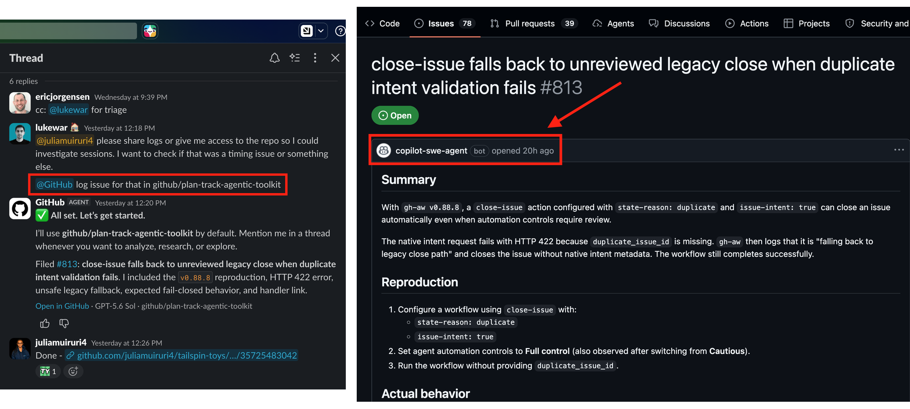

OPENING / 01 THE HUMAN + AGENT FUTURE
A NEW WAY TO BUILD TOGETHER
The repositorythe room.
Parallel development with agents needs a shared place to propose work , show evidence , and make decisions .
JM Julia Muiruri Developer Experiences (DX) at GitHub
01 / INTENT ISSUE
02 / WORK AGENT
03 / EVIDENCE PR
04 / DECISION HUMAN
THE LOOP
Advance four times to highlight the ideas before moving to slide 2.
THE PRESSURE / 02 2024 → 2025 / MONTHLY AVERAGES
GITHUB OCTOVERSE 2025 More work reaches Across three different measures, the monthly average rose year over year.
MONTHLY AVERAGE
PRs merged MILLIONS / MONTH
Issues closed MILLIONS / MONTH
Code pushes MILLIONS / MONTH
GitHub Octoverse monthly averages, 2024 compared with 2025, in millions per month Metric 2024 2025 Pull requests merged 35 million per month 43.2 million per month Issues closed approximately 3.4 million per month 4.25 million per month Code pushes 65 million per month 82.19 million per month
THE PRESSURE / 03 2026 / MONTHLY SCALE
The scale of
MONTHLY COMMITS / BILLIONS 0 1B 2B 3B
The PR and repository estimates are visual readings near the August 2026 endpoints of GitHub's published charts.
GitHub-reported monthly commits at two points in 2026 Month Monthly commits April 2026 1.4 billion August 2026 2.9 billion
Approximate visual estimates from the August 2026 endpoints of GitHub's published charts, not directly reported totals Measure Approximate monthly amount near August 2026 Pull requests merged approximately 130 million per month New repositories approximately 24 million per month
THE AUTOMATION / 04 2024 → 2025 / ANNUAL MINUTES
GITHUB ACTIONS Automation has Public and open-source projects used 11.5B Actions minutes in 2025, up 35% from 2024.
ACTIONS MINUTES / BILLIONS PER YEAR +35% YoY
0 6B 12B
Annual GitHub Actions minutes in public and open-source projects; 2024 is calculated from GitHub's stated 35 percent growth Year Annual minutes Basis 2024 approximately 8.5 billion minutes Calculated: 11.5 billion divided by 1.35 2025 11.5 billion minutes Directly reported, up 35 percent year over year
PLATFORM-WIDE / DAILY JOBS 71M jobs per day Reported in GitHub's Actions update. A daily job count, not the annual public/open-source minutes charted here.
Following the August outage, GitHub pivots its reliability work to focus on adding capacity, improving efficiency, and removing architectural bottlenecks
SOURCE / GITHUB RELIABILITY UPDATE ↗
THE TENSION / 05 CAPABILITY × CONTROL
BOTH SIDES ARE RIGHT
Two needs.
+ DEVELOPERS WANT More leverage Agents that can investigate, make a start, and carry work across tools.
LESS FRICTION / MORE CAPABILITY
AND
✓ MAINTAINERS NEED More control Clear boundaries for intake, automation, review, and the final call.
CLEARER SIGNAL / ACCOUNTABLE DECISIONS
A PRINCIPLE / 06
+
Speed is notTrustworthy flow is. Make the path from intent to decision legible to everyone in it.
THE CHOICE / 07 PARALLELISM NEEDS A SHAPE
Dimensions of parallelization Decide where work runs, when it starts, and who remains accountable.
01 / WHERE Environment Keep close work local; give independent changes their own workspace.
02 / WHEN Timing Work now, on a defined event, or on a deliberate schedule.
03 / WHO Ownership Developer, agent, or focused subagents; a person owns the decision.
THE SURFACE / 08 PLACE THE WORK DELIBERATELY
Choose the surface for the work. Match the task to the right degree of direct control, coordination, and isolation.
DIRECT / 01 At the keyboard VS Code Keep a focused edit and its checks close to your local workspace.
COORDINATE / 02 Across sessions Copilot app Follow parallel lanes; bring their results together for review.
DELEGATE / 03 Beyond the laptop Cloud agents Use isolated cloud execution for bounded work when it fits.
LOCAL / DIRECT CONTROL COORDINATED PARALLEL WORK ISOLATED CLOUD EXECUTION
THE EDITOR / 09 WORK BESIDE THE AGENT
IDEs: VS Code Start with project context. Inspect the agent's work before it becomes yours.
01 / TASK CONTEXT Set the boundary. Give the goal, repository guidance, and a checkable finish line.
HUMAN INPUT
02 / AGENT EDITS VS CODE WORKSPACE
TARGET FILE setup.md
PROPOSAL A focused change
Stay in the editor while the agent explores and proposes edits.
03 / EVIDENCE Read the result. − unclear step
+ checkable step
Diff + test outcome; note what remains uncertain.
04 / HUMAN REVIEW Keep, revise, or reject. THE DECISION STAYS WITH YOU
THE TERMINAL / 10 WORK FROM THE REPOSITORY
GitHub Copilot CLI Direct a bounded task at the terminal, then check what actually changed.
TERMINAL / LOCAL WORKSPACE HUMAN + AGENT
01 / INSPECT Find the context. Read the files and repository instructions.
02 / DIRECT Name one change. Set scope and a checkable result.
03 / VERIFY Check the work. Run focused commands or tests; inspect the diff.
EVIDENCE TO CARRY FORWARD What can you show? CHANGES Files and diff
CHECKS Commands and outcomes
GAPS What remains uncertain
04 / HUMAN REVIEW Make the call. Keep or revise after reading the evidence.
THE PRESSURE / 11
Parallel work
→ → →
SHARED WORKSPACE
CONTEXT STATE PROCESSES ATTENTION
COORDINATION BOTTLENECK
THE WORKSPACE / 12 HUMANS STAY IN THE LOOP
GITHUB COPILOT APP
Agent-native
Coordinate parallel agent work. See where attention is needed; keep the review and decision with a person.
gh.io/app ↗
PARALLEL WORK / SHARED VIEW
Feature A Add search functionality
Feature B Migrate the database to PostgreSQL
Feature C Fix checkout validation
↓
HUMAN REVIEW Decide what moves forward.
THE MODEL / 13 INTENT → EVIDENCE → DECISION
A SHARED CONTRACT Give the work Parallel lanes meet again when issues frame the work and PRs carry its evidence.
01 / FRAME Issue What needs to change and why?
HUMAN-DEFINED INTENT →
02 / EXPLORE Agent What approach might work?
BOUNDED EXECUTION →
03 / SHOW Pull request What changed, and what supports it?
REVIEWABLE EVIDENCE →
04 / GOVERN Maintainer Is this ready to merge?
HUMAN DECISION
The agent contributes to the process. It does not replace the process.
THE REVIEW SURFACE / 14 THE DIFF NEEDS A STORY
PULL REQUESTS Put the handoff The PR is where generated work becomes reviewable work.
PROPOSED CHANGE READY FOR REVIEW
Make first-run setup reproducible − Unclear prerequisite
+ Explicit environment check
+ Verified preview step
AUTHOR: AGENT-ASSISTED DECISION: MAINTAINER
01 Scope Does the change match the issue?
02 Evidence Do the checks support the claim?
03 Judgment Are the tradeoffs acceptable?
A report enters triage.
SWIPE IMAGE TO READ
FOLLOW THE HANDOFF / 19
The report gets a record. Issue details on GitHub. Confirmation back in Slack.
SWIPE IMAGE TO READ
SWIPE IMAGE TO READ

THE TAKEAWAY / 20 BUILD TOGETHER / DECIDE TOGETHER